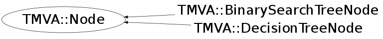

class TMVA::Node
Node for the BinarySearch or Decision Trees.
For the binary search tree, it basically consists of the EVENT, and
pointers to the parent and daughters
In case of the Decision Tree, it specifies parent and daughters, as
well as "which variable is used" in the selection of this node,
including the respective cut value.
Function Members (Methods)
This is an abstract class, constructors will not be documented.
Look at the header to check for available constructors.
public:
| virtual | ~Node() |
| virtual void | AddAttributesToNode(void* node) const |
| virtual void | AddContentToNode(stringstream& s) const |
| void* | AddXMLTo(void* parent) const |
| static TClass* | Class() |
| Int_t | CountMeAndAllDaughters() const |
| virtual TMVA::Node* | CreateNode() const |
| int | GetCount() |
| UInt_t | GetDepth() const |
| virtual TMVA::Node* | GetLeft() const |
| virtual TMVA::Node* | GetParent() const |
| virtual TMVA::BinaryTree* | GetParentTree() const |
| char | GetPos() const |
| virtual TMVA::Node* | GetRight() const |
| virtual Bool_t | GoesLeft(const TMVA::Event&) const |
| virtual Bool_t | GoesRight(const TMVA::Event&) const |
| virtual TClass* | IsA() const |
| TMVA::Node& | operator=(const TMVA::Node&) |
| virtual void | Print(ostream& os) const |
| virtual void | PrintRec(ostream& os) const |
| virtual void | ReadAttributes(void* node, UInt_t tmva_Version_Code = TMVA_VERSION_CODE) |
| virtual void | ReadContent(stringstream& s) |
| virtual Bool_t | ReadDataRecord(istream&, UInt_t tmva_Version_Code = TMVA_VERSION_CODE) |
| void | ReadXML(void* node, UInt_t tmva_Version_Code = TMVA_VERSION_CODE) |
| void | SetDepth(UInt_t d) |
| virtual void | SetLeft(TMVA::Node* l) |
| virtual void | SetParent(TMVA::Node* p) |
| virtual void | SetParentTree(TMVA::BinaryTree* t) |
| void | SetPos(char s) |
| virtual void | SetRight(TMVA::Node* r) |
| virtual void | ShowMembers(TMemberInspector& insp) |
| virtual void | Streamer(TBuffer& b) |
| void | StreamerNVirtual(TBuffer& b) |
Data Members
protected:
| UInt_t | fDepth | depth of the node within the tree (seen from root node) |
| TMVA::Node* | fLeft | pointers to the two "daughter" nodes |
| TMVA::Node* | fParent | the previous (parent) node |
| TMVA::BinaryTree* | fParentTree | pointer to the parent tree to which the Node belongs |
| char | fPos | position, i.e. it is a left (l) or right (r) daughter |
| TMVA::Node* | fRight | pointers to the two "daughter" nodes |
private:
| static Int_t | fgCount | counter of all nodes present.. for debug.. to spot memory leaks... |
Class Charts
{kind=link}
{kind=link}
{kind=link}
{kind=link}

Function documentation
Int_t CountMeAndAllDaughters() const
recursively go through the part of the tree below this node and count all daughters
Node* CreateNode() const
Bool_t GoesRight(const TMVA::Event& ) const
test event if i{ decends the tree at this node to the right
Bool_t GoesLeft(const TMVA::Event& ) const
test event if it decends the tree at this node to the left
Node* GetLeft() const
test event if it is equal to the event that "makes the node" (just for the "search tree" return pointer to the left/right daughter or parent node
{ return fLeft; }void AddAttributesToNode(void* node) const
void AddContentToNode(stringstream& s) const
void SetDepth(UInt_t d)
Set depth, layer of the where the node is within the tree, seen from the top (root)
{fDepth=d;}UInt_t GetDepth() const
Return depth, layer of the where the node is within the tree, seen from the top (root)
{return fDepth;}char GetPos() const
Return the node position, i.e, the node is a left (l) or right (r) daugther
{return fPos;}TMVA::BinaryTree* GetParentTree() const
Return the pointer to the Parent tree to which the Node belongs
{return fParentTree;}void SetParentTree(TMVA::BinaryTree* t)
set the pointer to the Parent Tree to which the Node belongs
{fParentTree = t;}Bool_t ReadDataRecord(istream& , UInt_t tmva_Version_Code = TMVA_VERSION_CODE)
void ReadAttributes(void* node, UInt_t tmva_Version_Code = TMVA_VERSION_CODE)
void ReadContent(stringstream& s)